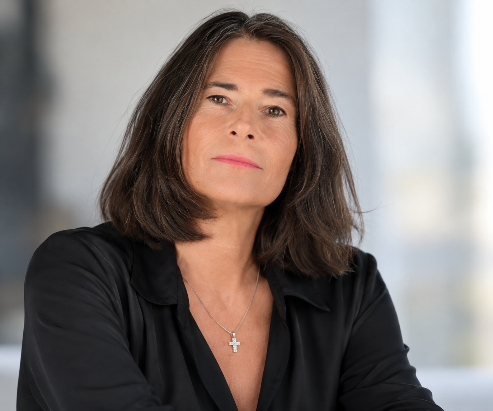

Magda Bernasconi · Biography
Behind every image,
my way of seeing.
I am Magda Bernasconi.
Photography is my way of remembering.
In MBM Photo Art I bring together landscapes, encounters and details: moments I choose to capture and share through light and emotion.
A little about me
A little about me
A growing passion.
A moment to treasure.
I love the mountains and skiing, follow ice hockey and enjoy observing the world around me. I want to capture what catches my eye, without losing a moment: this is also how I came to photography.
It is a passion I have carried since I was a girl, one that has matured especially over the past twenty years. Over time it has become an increasingly personal way of seeing, remembering and telling stories.
Through my photographs I try to tell a story and leave a mark: to preserve an emotion, notice a detail and share a moment that means something to me. From landscapes to movement, from people to small details, every subject offers a chance to look more closely.
I continue to nurture this passion through practice and the workshops I have attended over the years. Learning new techniques and experimenting helps me improve and find new ways of expressing what I see and feel.
My photographic pursuit
Every shot is a journey,
every image tells a story.
Always searching for the perfect photograph
Every shot is a journey because it takes me to explore a place, meet a person or discover a detail I had not noticed before. It is a path of observation, curiosity and choices: where to stop, which light to follow and when to press the shutter.
Every image tells a story because it holds something of that moment: an emotion, an atmosphere, a gesture. Photography allows me to preserve and share it, leaving room for the viewer to rediscover a memory or imagine a story.
The perfect photograph is the horizon I keep walking towards: an image in which technique, light and emotion find their balance. Seeking it means continuing to learn, experiment and improve without losing the pleasure of photography.
My journey through images
Curiosity
stays with me.
My portfolio
Landscapes, presences and details arranged in categories to explore different facets of my vision.
Explore the photographs ↗02 / LearningWorkshops and experiences
Techniques, experiments and fresh perspectives: photographic experiences that nourish my desire to improve.
Enter the workshop ↗03 / SharingThe Sound of Silence
The permanent exhibition between the Verzasca Valley and Lapland, featuring photographs printed on glass.
Discover the exhibition ↗Let's stay in touch